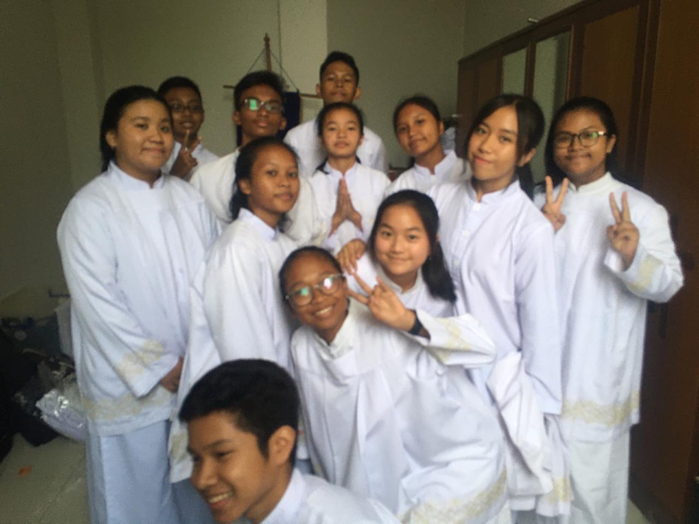
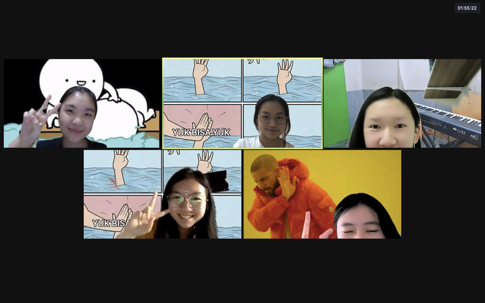

I am a very active high-school student and I love to broaden my connection. I find being a part of an active non-profit organization is a great way to find more network. In addition, I genuinely enjoy working as an individual volunteer and as a team to spread awareness so that I can contribute in making the world a better place.
- Speech Committee ESCALADES REVIVAL 2020 at SMAK 5 PENABUR Jakarta. Date: June 2020-October 2020. Click here for more. ESCALADES is an annual competition event organized by SMAK 5 PENABUR Jakarta. This event celebrates the entusiasm and excitement of Indonesia's youth, all held by the committee of ESCALADES from students of SMAK 5 PENABUR Jakarta. ESCALADES aims to introduce SMAK 5 PENABUR Jakarta to surrounding environment, create a strong relationship between schools, as well as to build a sense of concern for participants and visitors of ESCALADES SMAK 5. I was one of the Speech Competition Committee. My tasks cover:
- Build a functional rundown which works for the judges, participant, and audience.
- Connect with judges & participants and help with any type of inquiries.
- Manage time and be present when the competition day arrives.
- Create a fair judging system for judges to use of participant's performance.
- Secretary 2 at my local church: Misdinar St. Leo Agung, Paroki Jatiwaringin Date: August 2019-Present. Click here for more. My tasks cover:
- Manage all files, data, and documents related to any events or other activites as an acolyte.
- Trained to make neat schedules, official letters, and other documents for the purposes of church events.
- Serve Father in official mass.
- Teach and prepare new members about Misdinar St. Leo Agung duties and tasks.

- SMAK 5 ON AIR CREW: Today, Resolved at SMAK 5 PENABUR Jakarta. Date: February 2021-Present. Click here for more. SMAK 5 ON AIR CREW is an official podcast made by SMAK 5 PENABUR students. I am the head of Today, Resolved: SMAK 5 ON AIR CREW division. Me & my team aims to deliver the most recent news to our audience. Moreover, we hope to help with the elimination of false news of hoax and spread awareness to avoid rumors. Our latest episode focuses on how students can overcome procrastination in a scientific way with a self-developer mentor, Christy MS. My tasks cover:
- Research content and potential materials for upcoming themes of each episodes.
- Write full script for upcoming episodes of podcasts.
- Create neat and tidy timetables which works for all members, interviewees, or anyone involved.
- Coordinate all members for meetings, rehearsals before record-day, and interviewees.
- Attend as a podcaster with or without interviewees.
- Moderator I-SCREAM 2021 at SMAK 5 PENABUR Jakarta. Date: March 2021-Present. I-SCREAM is an organization of SMAK 5 PENABUR which organizes any type of activities related to school. I-SCREAM was made in order to help members of the student council to help small activities which involve only SMAK 5 PENABUR environment. For instance, Indonesia's Independence Day Celebration, Teacher's Day, Valentine's Day, Christmas Celebration, etc. I am one of the members which focuses as host in occasions. My tasks cover:
- Attend as host/moderator at any activites assign from the student coucil.
- Write full script as host/moderator for upcoming school event.
- Coordinate with other members of the committee involved in the event.
- Fully manage time and the pace of an event in order to avoid delay and/or other disturbance.
- TROOPS 2021 at SMAK 5 PENABUR Jakarta. Date: April 2021-Present. TROOPS 2021 is an organization of SMAK 5 PENABUR which aims to help SMAK 5 Student Council Division 10 to spread the use of English for SMAK 5 PENABUR students. I have both manage as a graphic designer and blog writer in TROOPS 2021. Click here for my blog post and click here for one of my design. My tasks include:
- Outsourcing Committee ESCALADES EQUINOX 2021 at SMAK 5 PENABUR Jakarta. Date: June 2021-Present. ESCALADES is an annual competition event organized by SMAK 5 PENABUR Jakarta. This event celebrates the entusiasm and excitement of Indonesia's youth, all held by the committee of ESCALADES from students of SMAK 5 PENABUR Jakarta. ESCALADES aims to introduce SMAK 5 PENABUR Jakarta to surrounding environment, create a strong relationship between schools, as well as to build a sense of concern for participants and visitors of ESCALADES SMAK 5. I was one of the outsourcing committee. My tasks cover:
- Create sponsorship packages which are beneficial for potential sponsor.
- Arrange and compile sponsorship proposal.
- Connect with big corporates accross Indonesia and offer sponsorship possibilities.
- Make deals and take care of the cooperation with corporates accross Indonesia related to sponsorship means.
- Create an equilibrium of income and expense in order to success ESCALADES EQUINOX 2021.

- Graphic Designer at Moonglade Project. Date: June 2021-Present. Click here for more. Moonglade Project is a youth-led organization aimed to bridging the gaps in educational issues across the world. I am one of the graphic designers in Moonglade Project. Hence, my tasks include:
- Manage Moonglade Project's Instagram.
- Design graphic for Instagram feeds.
- Attend meetings for monthly color palettes, fonts, etc.
- Grow, develop, and broaden Moonglade Project as a nonprofit organization.
- Content Editor Mathematics & Computer Science Department at STEM From Scratch Date: June 2021-Present. Click here for more. STEM From Scratch provides valuable STEM resources accessible to students from any parts of the world. We add new resources to our website every week to keep it active! Moreover, STEM From Scratch have our own community on Discord for additional opportunities, network & connection, contest or competitions, webinars, all related to STEM and its field. Hence, my tasks include:
- Manage STEM From Scratch's website.
- Discover new sources related to Mathematics and Computer Science.
- Be active at Discord Communnity.
- Grow, develop, and broaden STEM From Scratch as a nonprofit organization.